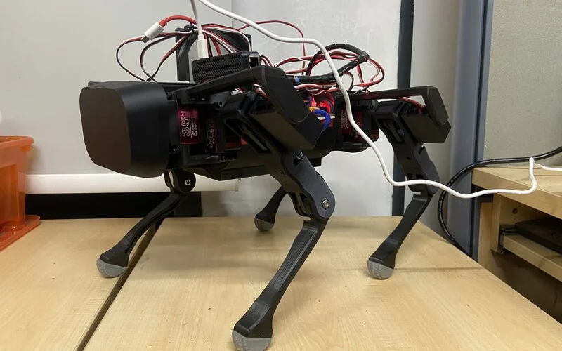
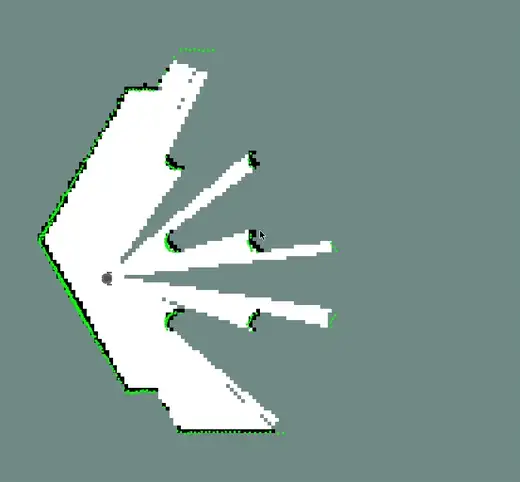
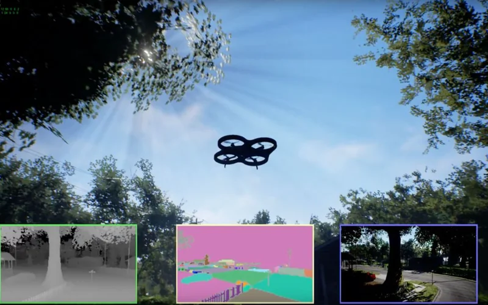
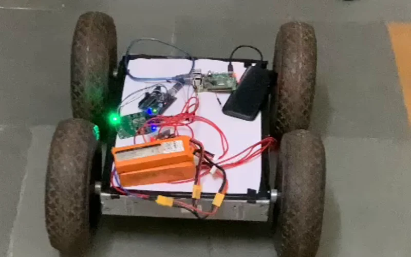
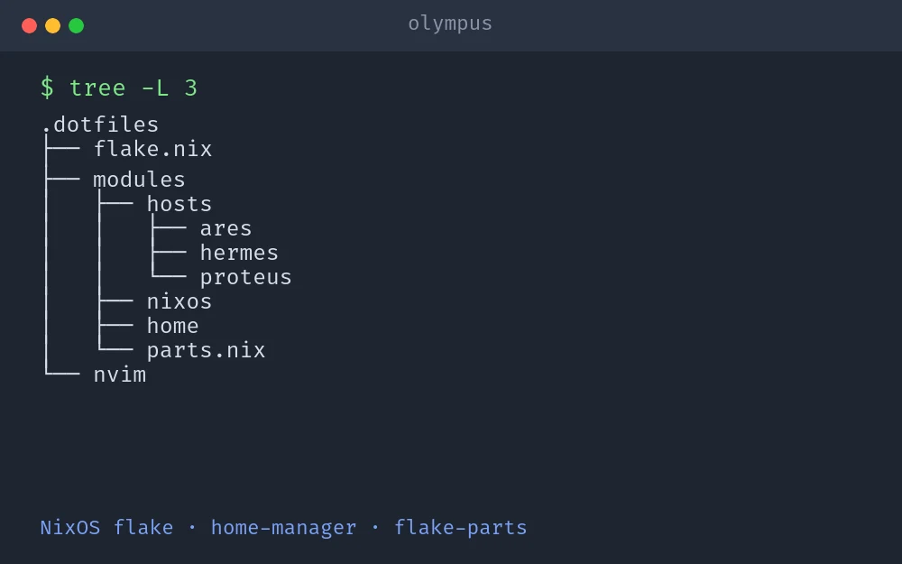
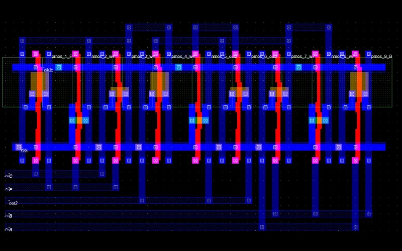
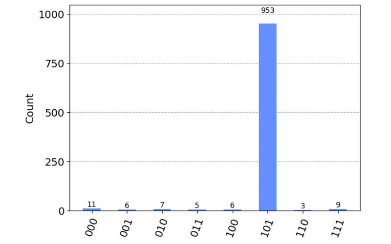

All Projects
Things I have built and worked on.
-
 Livox Lidar Gazebo Simulation for ROS 2
Livox Lidar Gazebo Simulation for ROS 2Livox Mid-360 and HAP lidar simulation for Gazebo Harmonic and ROS 2 Jazzy, with the real non-repetitive scan pattern, per-point timing and datasheet noise.
-

Scout: A Custom Low-cost Quadruped PlatformA low-cost ROS 2 quadruped built on OpenQuadruped, with custom electronics and a custom RL-trained gait. Built from cheap parts, in the same price range as OpenQuadruped, and tested in Gazebo and on the real robot.
-

RRT-based Exploration of Unknown EnvironmentsA ROS Noetic package that grows RRTs on the SLAM occupancy grid to find frontiers, clusters and filters them, and sends the best one to move_base. Runs on a TurtleBot3 with gmapping.
-

Reinforcement Learning for Agile Path Planning of MulticoptersA multicopter simulation in Unreal Engine, AirSim and OpenAI Gym, with PPO-trained recovery that regains control and hovers after signal loss or motor failure, and semantic segmentation for obstacle perception. Also built a physical quadcopter with a Jetson, ZED stereo camera and Pixhawk running PX4 for sim-to-real testing.
-

CivilbotA low-cost four-wheeled ROS rover for testing lidar mapping and navigation, using the ROS Navstack and Hector mapping with a differential drive. Also tested a ZED stereo camera through the ZED Open Capture library.
-

Declarative NixOS System ConfigurationMy personal NixOS configuration, a declarative flake-based setup for my laptop, home server and dev environment.
-

Low-Area 4-bit Parity Checker and Sequence Comparator in VLSIA 4-bit even parity checker at 180 nm, with its XOR gates cut down from the standard 8-transistor form to a transmission-gate version and then a three-transistor design (5.947 µW), with the output transistor's W/L ratio tuned to limit threshold-drop degradation. Also a D flip-flop sequence comparator, written in gate-level Verilog, that flags inputs that differ over four consecutive clock cycles.
-

Amplitude Amplification for Boolean Expression EvaluationA Qiskit implementation of Grover-style amplitude amplification that finds the unique solution of a three-variable Boolean satisfiability problem in two iterations, with a measured probability of 0.953 in simulation. Uses O(√N) oracle calls against O(N) classically, and outlines how to adapt the oracle and the iteration count to other problems.